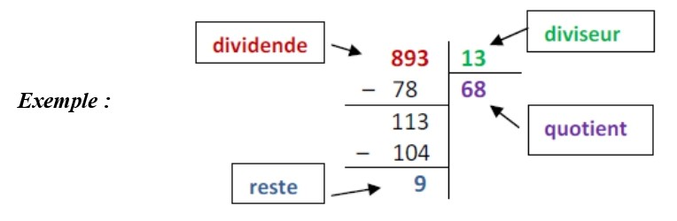
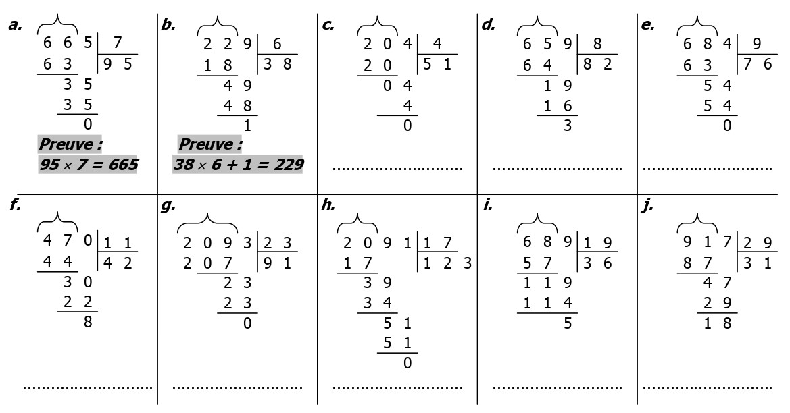

Chapitre 1
Division euclidienne · Multiples et diviseurs — Cahier interactif
La division euclidienne d'un nombre entier, appelé dividende, par un nombre entier différent de zéro, appelé diviseur, revient à trouver deux nombres, appelés quotient et reste, vérifiant :

Pour chacune de ces divisions, écris la preuve qui correspond, comme dans les deux exemples (a. et b.) :

Énoncé : Une tarte pour 4 personnes coûte 7 €. Une cuisinière dans un restaurant dispose de 85 €. Combien peut-elle acheter de tartes ? Combien lui reste-t-il d'argent ?
Astuce : effectue la division euclidienne de 85 par 7.
Pour chaque division, complète ce qui manque : parfois un nombre (quotient ou reste), parfois le nom de l'élément (dividende, diviseur, quotient, reste). Pour les noms, fais glisser une étiquette dans la bonne case — ou choisis dans la liste.
Exemple : 38 = 5 × 7 + 3 → 38 est le dividende, 5 le diviseur, 7 le quotient, 3 le reste.
Cette équation représente-t-elle une division euclidienne correcte ? Réponds par vrai ou faux, puis justifie ta réponse (équation fausse ? reste ≥ diviseur ?…).
Si le reste de la division euclidienne d'un nombre entier a par un nombre entier non nul b est égal à 0, on dit que :
La division euclidienne de 105 par 7 donne un reste nul : 105 = 15 × 7. On peut dire que :
À l'aide du vocabulaire ou d'un nombre qui convient.
36 est un de 9.
48 est par 6.
5 est un de 30.
est un multiple de 15.
3 n'est pas un de 43.
Colorie la bonne étiquette.